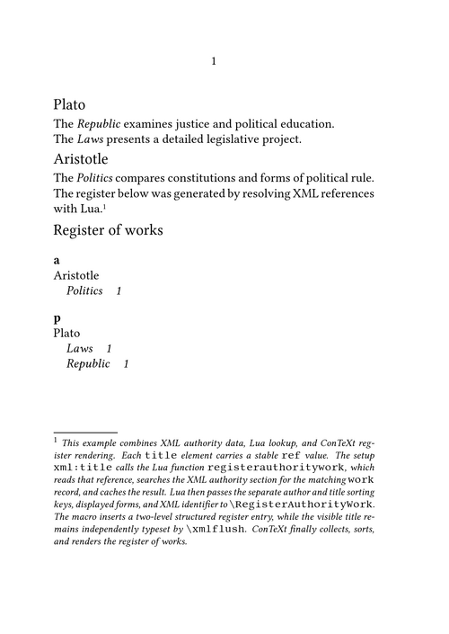

Indexes and registers in ConTeXt · Overview · How-to guides · Previous: Creating multiple registers · Managing structured register data · Next: How-to guides
Under construction. The examples on this page have been compiled with ConTeXt LMTX. The explanatory text is being refined so that the progression from ordinary register commands to XML and Lua workflows remains explicit.
Contents
-
1
Managing structured register data
- 1.1 1. Identify the layers of a register occurrence
- 1.2 2. Start with the ordinary register interface
- 1.3 3. Use processors for page-reference roles
- 1.4 4. Insert decomposed register data with \setstructurepageregister
- 1.5 5. Attach userdata to occurrences
- 1.6 6. Create an explicit register page range
- 1.7 7. Generate register entries directly from XML attributes
- 1.8 8. Generate structured entries from a Lua authority table
- 1.9 9. Resolve XML authority records with Lua
- 1.10 10. Normalize sorting data before insertion
- 1.11 11. Choose the least complex suitable interface
-
1.12
12. Diagnose common problems
- 1.12.1 12.1. Formatted text is also used as the sorting key
- 1.12.2 12.2. XML occurrence text becomes the canonical entry
- 1.12.3 12.3. Userdata is stored but not printed
- 1.12.4 12.4. Distinct records are merged
- 1.12.5 12.5. Lua receives an unknown identifier
- 1.12.6 12.6. A register definition refers to itself as parent
- 1.12.7 12.7. The register reflects an earlier run
- 1.13 13. What this guide has established
- 1.14 14. See also
A register entry can be more than a piece of text followed by a page number. In a structured publishing workflow, one occurrence may contain several independent kinds of information:
- a register instance;
- one or more displayed entry levels;
- one or more sorting keys;
- a page reference or page range;
- a named presentational role;
- occurrence-specific metadata;
- a stable identifier linking the occurrence to an external authority record.
This guide shows how to keep these layers separate and how to choose the least complex ConTeXt interface that preserves the distinctions required by the project.
Goal. By the end of this guide, you should be able to move from ordinary \index entries to structured register insertions generated from macros, XML attributes, Lua tables, and XML authority records resolved through Lua.
1. Identify the layers of a register occurrence
The same occurrence may carry several different representations.
| Layer | Purpose | Example |
|---|---|---|
| Register instance | Selects the register that receives the occurrence. | index, authors, works
|
| Displayed entry | Supplies the text printed in the final register. | Plato, italic Republic
|
| Sorting key | Supplies plain sortable data. | Plato, Republic
|
| Hierarchy | Places an entry below a parent entry. | Plato + Republic
|
| Page role | Distinguishes kinds of references. | Main discussion, passing mention |
| Userdata | Stores metadata attached to one occurrence. | role=m, xmlid=plato-republic
|
| Authority identifier | Links the occurrence to a canonical external record. | plato-republic
|
Central distinction. The displayed entry is what the reader sees. The sorting key is what ConTeXt compares. Userdata is stored with the occurrence but has no automatic visual form. An authority identifier links the occurrence to canonical data elsewhere.
2. Start with the ordinary register interface
Use the ordinary interface whenever the entry can be expressed directly at the point where it occurs.
A simple entry uses:
\index{Plato}
A separate sorting key uses:
\index[Plato]{Plato}
A hierarchical entry uses the plus sign:
\index[Plato+Republic]{Plato+\emph{Republic}}
The first level is Plato; the second level is Republic.
2.1. MWE 1: separate sorting data from displayed text
This example keeps plain sorting keys separate from the formatted text printed in the index.
\mainlanguage[en]
\setuppapersize[A6]
\setupbodyfont
[libertinus,10pt]
\setupinteraction
[state=start]
\setupregister
[index]
[n=1,
balance=no]
\starttext
\subject{Philosophical works}
\bold{How it works.}
Each \type{\index} command supplies a plain sorting key in brackets
and a separately formatted entry in braces. ConTeXt sorts the index
by the key but prints the formatted entry. The plus sign separates
the first-level entry from its subentry.
\index[Aristotle+Politics]
{Aristotle+\emph{Politics}}
Aristotle's \emph{Politics} examines political communities and
their constitutions.
% \page
\index[Plato+Laws]
{Plato+\emph{Laws}}
Plato's \emph{Laws} presents a detailed account of legislation.
\index[Plato+Republic]
{Plato+\emph{Republic}}
The \emph{Republic} discusses justice, education, and political order.
% \page
\subject{Index}
\placeregister[index]
\stoptext
{kind=link}
The mechanism is direct:
- the optional argument supplies sortable data;
- the braced argument supplies the printed form;
- the plus sign creates the hierarchy;
-
the commented
\pagecommands keep the demonstration on one page.
Use this interface first. Separate sorting keys and hierarchical levels do not, by themselves, require a lower-level structured command.
3. Use processors for page-reference roles
Processors are named transformations applied when register data is rendered. In the validated example below, the processors distinguish the visual treatment of page references.
\defineprocessor [main] [style=bold] \defineprocessor [passing] [style=italic]
The processor is attached to the occurrence through the optional argument:
\index[main->justice]{justice}
and:
\index[passing->education]{education}
The entry remains justice or education; the processor changes the associated page reference.
Do not confuse three mechanisms. A sorting key controls order. Formatting such as \emph changes the displayed entry. A processor such as main or passing can assign a named visual role to the page reference.
3.1. MWE 2: distinguish principal and passing references
\mainlanguage[en]
\setuppapersize[A6]
\setupbodyfont
[libertinus,9pt]
\defineprocessor
[main]
[style=bold]
\defineprocessor
[passing]
[style=italic]
\setupregister
[index]
[n=1,
balance=no]
\starttext
\subject{Political concepts}
\index[main->justice]{justice}
The principal discussion of justice begins here.
\blank[small]
\index[passing->education]{education}
Education is mentioned only in passing.
\blank[small]
\index[Plato+Republic]
{Plato+\emph{Republic}}
Plato's \emph{Republic} provides the main example.
\footnote{\emph{This example combines several distinct mechanisms.
The processors \type{main} and \type{passing} do not change
the index entries themselves: they change the appearance of
the page references attached to those entries. By contrast,
\type{\emph} changes the displayed form of the subentry
\emph{Republic}, while the plain key \type{Republic} continues
to control its sorting. The example therefore keeps semantic
role, sorting data, displayed text, and page-reference
formatting separate. Feel free to experiment with a longer
text in order to observe the mechanism across several pages.}}.
\subject{Index}
\placeregister[index]
\stoptext
{kind=link}
Semantic advantage. Names such as main and passing describe editorial roles. Their appearance can be changed globally without rewriting the index entries.
4. Insert decomposed register data with \setstructurepageregister
When a macro, an XML setup, or Lua already supplies separate fields, the compact ordinary syntax may become inconvenient.
The lower-level command is:
\setstructurepageregister [register] [register settings] [userdata]
Its three arguments are:
- the register instance;
- fields interpreted by the register mechanism;
- arbitrary metadata stored with the occurrence.
A one-level entry can be written as:
\setstructurepageregister [index] [entries=Plato, keys=Plato] []
A two-level entry uses numbered fields:
\setstructurepageregister [index] [entries:1=Plato, keys:1=Plato, entries:2=Republic, keys:2=Republic] []
Use this interface when the data has already been decomposed into named fields. Do not use it merely to replace a straightforward \index command.
4.1. MWE 3: construct hierarchical entries through a macro
The macro below receives four independent arguments:
- author sorting key;
- displayed author name;
- title sorting key;
- displayed title.
\mainlanguage[en]
\setuppapersize[A6]
\setupbodyfont
[libertinus,9pt]
\defineregister[works]
\setupregister
[works]
[n=1,
balance=no]
\define[4]\RegisterWork
{\setstructurepageregister
[works]
[entries:1={#2},
keys:1={#1},
entries:2={\emph{#4}},
keys:2={#3}]
[]}
\starttext
\subject{Political philosophy}
\RegisterWork
{Plato}
{Plato}
{Republic}
{Republic}
Plato's \emph{Republic} examines justice and the best political order.
\blank[small]
\RegisterWork
{Aristotle}
{Aristotle}
{Politics}
{Politics}
Aristotle's \emph{Politics} analyses constitutions and political life.
\blank[small]
\RegisterWork
{Plato}
{Plato}
{Laws}
{Laws}
Plato's \emph{Laws} gives legislation a central role.\footnote
{\emph{The command \type{\RegisterWork} receives four independent
arguments: the author's sorting key, the displayed author name,
the work's sorting key, and the displayed title. It passes them
to \type{\setstructurepageregister} as two hierarchical levels.
The plain values stored in \type{keys:1} and \type{keys:2}
determine alphabetical order, while \type{\emph} affects only
the displayed title. Feel free to experiment with a longer text
in order to observe how the same structured entries collect
references from several pages.}}
\subject{Register of works}
\placeregister[works]
\stoptext
{kind=link}
This is the first example in which the document no longer reconstructs the register entry with a plus-separated expression. The macro supplies the levels directly.
Lower-level interface. \setstructurepageregister is useful in controlled workflows, but ordinary authors should normally remain with \index or a register instance created with \defineregister.
5. Attach userdata to occurrences
The third argument of \setstructurepageregister stores arbitrary key–value data with one occurrence.
\setstructurepageregister [index] [entries=Plato, keys=Plato] [role=author, xmlid=person-plato]
The fields role and xmlid do not alter the entry automatically. They remain available to custom processing and rendering commands.
Possible userdata includes:
- a database identifier;
-
an XML
xml:id; - the editorial role of the occurrence;
- a language code;
- a source file;
- a confidence value;
- a class used by a custom page command.
Useful rule. Put data in entries and keys when it affects hierarchy, sorting, or display. Put auxiliary metadata in userdata.
5.1. Retrieve userdata while rendering page references
During page-reference rendering:
\currentregisterpageuserdata{field}
returns the value stored under field for the current occurrence.
A custom page command can use it:
\define[1]\PageWithRole
{#1%
\doifnotempty
{\currentregisterpageuserdata{role}}
{\high{\currentregisterpageuserdata{role}}}}
and the register can activate that command:
\setupregister [index] [pagecommand=\PageWithRole]
5.2. MWE 4: display occurrence userdata beside page references
\mainlanguage[en]
\setuppapersize[A6]
\setupbodyfont
[libertinus,9pt]
\setupnotation
[footnote]
[alternative=serried,
width=fit,
distance=.5em,
bodyfont=7.5pt,
style=italic]
\define[1]\PageWithRole
{#1%
\doifnotempty
{\currentregisterpageuserdata{role}}
{\high{\currentregisterpageuserdata{role}}}}
\setupregister
[index]
[n=1,
balance=no,
pagecommand=\PageWithRole]
\starttext
\subject{Justice}
\setstructurepageregister
[index]
[entries=justice,
keys=justice]
[role=m,
source=chapter-one]
This page contains the main discussion of justice.
\blank[small]
\setstructurepageregister
[index]
[entries=justice,
keys=justice]
[role=p,
source=chapter-two]
This page contains a passing reference to justice.
\blank[small]
\setstructurepageregister
[index]
[entries=education,
keys=education]
[role=m,
source=chapter-two]
Education is discussed as a principal topic.\footnote
{This example coordinates three mechanisms.
\type{\setstructurepageregister} supplies the displayed entry
and its sorting key, while its third argument stores metadata
specific to the occurrence, here \type{role} and \type{source}.
When the index is rendered, \type{\PageWithRole} receives the
page reference and retrieves \type{role} through
\type{\currentregisterpageuserdata}; that value is printed as
a raised letter beside the page number. Because ConTeXt merges
identical entries occurring on the same page, the two roles
attached to \emph{justice} cannot appear separately here.
Experiment with a longer text to observe the mechanism across
several pages.}
\subject{Index}
\placeregister[index]
\stoptext
{kind=link}
The raised letters are derived from userdata. They are not part of the displayed entry or the sorting key.
5.3. Understand duplicate merging
Userdata belongs to an occurrence, but it does not automatically redefine the identity of an entry.
If two distinct entities must never be merged, give them different register keys or different hierarchical data. Do not rely only on an auxiliary identifier stored as userdata.
6. Create an explicit register page range
A page range is opened and closed with the same tag:
\startregister
[index]
[range-tag]
{entry}
and:
\stopregister [index] [range-tag]
The tag links the beginning and end of the same range.
6.1. MWE 5: create an explicit page range
\mainlanguage[en]
\setuppapersize[A6]
\setupbodyfont
[libertinus,9pt]
\setupnotation
[footnote]
[alternative=serried,
width=fit,
distance=.5em,
bodyfont=7.5pt,
style=italic]
\setupregister
[index]
[n=1,
balance=no,
compress=yes]
\starttext
\subject{The education of guardians}
\startregister
[index]
[guardianeducation]
{education+guardians}
The education of the guardians begins with music and gymnastics.
% \page
The discussion continues with the formation of character and judgement.
% \page
The argument concludes by relating education to political
responsibility.\footnote
{This example creates an explicit register range rather than
three independent occurrences. The command \type{\startregister}
records the entry and opens the range under the tag
\type{guardianeducation}; \type{\stopregister} closes the same
range by referring to that tag. ConTeXt then combines the opening
and closing locations into a single page interval. In this compact
one-page version, the result is necessarily \type{1--1}. Restore
the intervening \type{\page} commands, or experiment with a longer
text, to obtain a range extending across several pages.}
\stopregister
[index]
[guardianeducation]
\subject{Index}
\placeregister[index]
\stoptext
{kind=link}
Use stable tags. The opening and closing commands must use exactly the same register name and range tag. Generated workflows should also ensure that each tag is unique within the document.
7. Generate register entries directly from XML attributes
When an XML occurrence already contains all required register fields, an XML setup can map them directly to \setstructurepageregister.
For example:
<term key="justice" entry="justice" role="m">justice</term>
contains:
-
key: sorting data; -
entry: displayed register entry; -
role: userdata; - element content: the phrase printed in the running text.
7.1. MWE 6: generate an index directly from XML attributes
\mainlanguage[en]
\setuppapersize[A6]
\setupbodyfont
[libertinus,8.5pt]
\setuphead
[subject]
[before=\blank[small],
after=\blank[small]]
\setupnotation
[footnote]
[alternative=serried,
width=fit,
distance=.4em,
bodyfont=6.8pt,
style=italic]
\define[1]\PageWithRole
{#1%
\doifnotempty
{\currentregisterpageuserdata{role}}
{\high{\currentregisterpageuserdata{role}}}}
\setupregister
[index]
[n=1,
balance=no,
pagecommand=\PageWithRole]
\startbuffer[demo]
<document>
<section>
<head>Justice</head>
<p>
The dialogue begins with a
<term key="justice"
entry="justice"
role="m">principal question about justice</term>.
</p>
</section>
<section>
<head>Education</head>
<p>
The argument later connects
<term key="education"
entry="education"
role="m">education</term>
with political order.
</p>
<p>
It also returns briefly to
<term key="justice"
entry="justice"
role="p">justice</term>.
</p>
</section>
</document>
\stopbuffer
\startxmlsetups xml:demo:setups
\xmlsetsetup
{#1}
{document|section|head|p|term}
{xml:*}
\stopxmlsetups
\xmlregistersetup{xml:demo:setups}
\startxmlsetups xml:document
\xmlflush{#1}
\stopxmlsetups
\startxmlsetups xml:section
\xmlflush{#1}
% Restore \page to place each section on a new page.
\stopxmlsetups
\startxmlsetups xml:head
\subject{\xmlflush{#1}}
\stopxmlsetups
\startxmlsetups xml:p
\xmlflush{#1}
\par
\stopxmlsetups
\startxmlsetups xml:term
\setstructurepageregister
[index]
[entries={\xmlatt{#1}{entry}},
keys={\xmlatt{#1}{key}}]
[role={\xmlatt{#1}{role}}]
\xmlflush{#1}
\stopxmlsetups
\starttext
\xmlprocessbuffer
{main}
{demo}
{}
These entries come from XML.\footnote
{This example links XML processing to register rendering.
\type{\xmlsetsetup} routes each element to a setup, and
\type{xml:term} reads \type{key}, \type{entry}, and
\type{role} with \type{\xmlatt}.
\type{\setstructurepageregister} stores the first two as
register data and \type{role} as userdata, while
\type{\xmlflush} prints the visible XML text. When the index
is rendered, \type{\PageWithRole} retrieves the stored role
and raises it beside the page number. Restore \type{\page}
in \type{xml:section} to test the mechanism across pages.}
\subject{Index}
\placeregister[index]
\stoptext
{kind=link}
| XML data | Register function |
|---|---|
key
|
Sorting key |
entry
|
Displayed register entry |
role
|
Userdata rendered beside the page reference |
| Element content | Text printed in the running document |
XML principle. Do not derive canonical register data from the visible wording when the XML already supplies explicit fields. The visible phrase may be inflected, translated, abbreviated, or context-dependent.
8. Generate structured entries from a Lua authority table
Lua becomes useful when the document should contain only stable identifiers and the canonical data is stored elsewhere.
A practical division of labour is:
| Layer | Responsibility |
|---|---|
| Document command | Supplies a stable identifier |
| Lua | Resolves and validates that identifier |
| TeX wrapper | Translates separate Lua fields into register settings |
| ConTeXt register | Collects, sorts, merges, and renders the entries |
8.1. MWE 7: resolve work identifiers from a Lua table
\mainlanguage[en]
\setuppapersize[A6]
\setupbodyfont
[libertinus,8.5pt]
\setuphead
[subject]
[before=\blank[small],
after=\blank[small]]
\setupnotation
[footnote]
[alternative=serried,
width=fit,
distance=.4em,
bodyfont=6.8pt,
style=italic]
\defineregister[works]
\setupregister
[works]
[n=1,
balance=no]
\define[5]\RegisterAuthorityWork
{\setstructurepageregister
[works]
[entries:1={#2},
keys:1={#1},
entries:2={\emph{#4}},
keys:2={#3}]
[authorityid={#5}]}
\startluacode
userdata = userdata or { }
userdata.workauthority = {
plato_republic = {
authorsort = "Plato",
author = "Plato",
titlesort = "Republic",
title = "Republic",
id = "work-plato-republic",
},
plato_laws = {
authorsort = "Plato",
author = "Plato",
titlesort = "Laws",
title = "Laws",
id = "work-plato-laws",
},
aristotle_politics = {
authorsort = "Aristotle",
author = "Aristotle",
titlesort = "Politics",
title = "Politics",
id = "work-aristotle-politics",
},
}
function userdata.registerwork(identifier)
local work = userdata.workauthority[identifier]
if not work then
logs.report(
"register authority",
"unknown work identifier %a",
identifier
)
return
end
context.RegisterAuthorityWork(
work.authorsort,
work.author,
work.titlesort,
work.title,
work.id
)
end
\stopluacode
\define[1]\Work
{\ctxlua{userdata.registerwork("#1")}}
\starttext
\subject{Classical political philosophy}
\Work{plato_republic}
The \emph{Republic} investigates justice and political order.
\blank[small]
\Work{aristotle_politics}
The \emph{Politics} compares constitutions.
\blank[small]
\Work{plato_laws}
The \emph{Laws} gives legislation a central place.\footnote
{This example uses Lua as an authority-data layer.
Each \type{\Work} command passes a stable identifier to
\type{userdata.registerwork}, which looks it up in the Lua
table and validates that a corresponding record exists.
Lua then sends the author key, displayed author name, title
key, displayed title, and authority identifier to
\type{\RegisterAuthorityWork}. That macro inserts a
two-level structured register entry: the plain values in
\type{keys:1} and \type{keys:2} control sorting, the values
in \type{entries:1} and \type{entries:2} control display,
and \type{authorityid} is preserved as occurrence-specific
userdata. ConTeXt remains responsible for collecting,
sorting, and rendering the register. Experiment with a
longer text to observe how repeated identifiers accumulate
page references.}
\subject{Register of works}
\placeregister[works]
\stoptext
{kind=link}
The source command is deliberately small:
\Work{plato_republic}
Lua expands that identifier into separate author and title fields. If the identifier is unknown, logs.report records the failure instead of silently creating an incomplete entry.
Architectural boundary. Lua resolves and validates the authority data. ConTeXt remains responsible for collecting occurrences, sorting entries, compressing page references, and typesetting the register.
9. Resolve XML authority records with Lua
In a more complete scholarly workflow, both the occurrences and the authority records may be stored in XML.
The XML occurrence contains only a reference:
<title ref="plato-republic">Republic</title>
The authority section contains the canonical data:
<work xml:id="plato-republic"
author-sort="Plato"
author-entry="Plato"
title-sort="Republic"
title-entry="Republic"/>
Lua then:
-
reads the occurrence's
refattribute; - locates the matching authority record;
- extracts its attributes;
- caches the result;
- passes the fields to a TeX wrapper;
- lets ConTeXt render the visible XML text and the register separately.
9.1. MWE 8: resolve an XML authority record with Lua
\mainlanguage[en]
\setuppapersize[A6]
\setupbodyfont
[libertinus,8.5pt]
\setuphead
[subject]
[before=\blank[small],
after=\blank[small]]
\setupnotation
[footnote]
[alternative=serried,
width=fit,
distance=.4em,
bodyfont=6.8pt,
style=italic]
\defineregister[works]
\setupregister
[works]
[n=1,
balance=no]
\define[5]\RegisterAuthorityWork
{\setstructurepageregister
[works]
[entries:1={#2},
keys:1={#1},
entries:2={\emph{#4}},
keys:2={#3}]
[xmlid={#5}]}
\startbuffer[demo]
<document>
<authority>
<work xml:id="plato-republic"
author-sort="Plato"
author-entry="Plato"
title-sort="Republic"
title-entry="Republic"/>
<work xml:id="plato-laws"
author-sort="Plato"
author-entry="Plato"
title-sort="Laws"
title-entry="Laws"/>
<work xml:id="aristotle-politics"
author-sort="Aristotle"
author-entry="Aristotle"
title-sort="Politics"
title-entry="Politics"/>
</authority>
<body>
<section>
<head>Plato</head>
<p>
The <title ref="plato-republic">Republic</title>
examines justice and political education.
</p>
<p>
The <title ref="plato-laws">Laws</title>
presents a detailed legislative project.
</p>
</section>
<section>
<head>Aristotle</head>
<p>
The <title ref="aristotle-politics">Politics</title>
compares constitutions and forms of political rule.
</p>
</section>
</body>
</document>
\stopbuffer
\startxmlsetups xml:demo:setups
\xmlsetsetup
{#1}
{document|authority|work|body|section|head|p|title}
{xml:*}
\stopxmlsetups
\xmlregistersetup{xml:demo:setups}
\startxmlsetups xml:document
\xmlflush{#1}
\stopxmlsetups
\startxmlsetups xml:authority
% Authority records are queried by Lua and are not printed.
\stopxmlsetups
\startxmlsetups xml:work
% Individual authority records are not printed directly.
\stopxmlsetups
\startxmlsetups xml:body
\xmlflush{#1}
\stopxmlsetups
\startxmlsetups xml:section
\xmlflush{#1}
\stopxmlsetups
\startxmlsetups xml:head
\subject{\xmlflush{#1}}
\stopxmlsetups
\startxmlsetups xml:p
\xmlflush{#1}
\par
\stopxmlsetups
\startxmlsetups xml:title
\xmlfunction{#1}{registerauthoritywork}
\emph{\xmlflush{#1}}
\stopxmlsetups
\startluacode
userdata = userdata or { }
userdata.workcache = userdata.workcache or { }
local function authoritywork(node)
local reference = xml.attribute(node, "", "ref")
if not reference or reference == "" then
logs.report(
"register authority",
"title occurrence without a ref attribute"
)
return nil
end
local cached = userdata.workcache[reference]
if cached then
return cached
end
local path =
"ancestor::document/authority/work[@xml:id='" ..
reference ..
"']"
local record = xml.first(node, path)
if not record then
logs.report(
"register authority",
"no authority record found for %a",
reference
)
return nil
end
local work = {
id = reference,
authorsort = xml.attribute(record, "", "author-sort"),
authorentry = xml.attribute(record, "", "author-entry"),
titlesort = xml.attribute(record, "", "title-sort"),
titleentry = xml.attribute(record, "", "title-entry"),
}
userdata.workcache[reference] = work
return work
end
function xml.functions.registerauthoritywork(node)
local work = authoritywork(node)
if not work then
return
end
context.RegisterAuthorityWork(
work.authorsort or "",
work.authorentry or "",
work.titlesort or "",
work.titleentry or "",
work.id or ""
)
end
\stopluacode
\starttext
\xmlprocessbuffer
{main}
{demo}
{}
The register below was generated by resolving XML references with Lua.\footnote
{This example combines XML authority data, Lua lookup, and
ConTeXt register rendering. Each \type{title} element carries
a stable \type{ref} value. The setup \type{xml:title} calls the
Lua function \type{registerauthoritywork}, which reads that
reference, searches the XML authority section for the matching
\type{work} record, and caches the result. Lua then passes the
separate author and title sorting keys, displayed forms, and XML
identifier to \type{\RegisterAuthorityWork}. The macro inserts
a two-level structured register entry, while the visible title
remains independently typeset by \type{\xmlflush}. ConTeXt
finally collects, sorts, and renders the register of works.}
\subject{Register of works}
\placeregister[works]
\stoptext
{kind=link}

This example keeps four representations separate:
| Representation | Example | Function |
|---|---|---|
| Occurrence text | Republic
|
Printed in the paragraph |
| Authority identifier | plato-republic
|
Links the occurrence to the authority record |
| Sorting data | Plato, Republic
|
Controls alphabetical order |
| Register display data | Plato, italic Republic
|
Printed in the register |
The cache avoids searching the XML authority section again when the same identifier is encountered repeatedly.
Architectural result. XML stores semantic relationships, Lua resolves and validates them, userdata preserves identifiers, and ConTeXt performs sorting, page aggregation, and final typesetting.
10. Normalize sorting data before insertion
External data may contain values that are unsuitable as sorting keys:
- leading articles;
- inconsistent capitalization;
- typographical markup;
- punctuation used only for display;
- variant spellings;
- composed and decomposed Unicode sequences;
- missing fields.
Normalization should occur before insertion into the register.
A Lua function may remove a leading English article:
local function normaltitle(title)
return title
:gsub("^The%s+", "")
:gsub("^A%s+", "")
:gsub("^An%s+", "")
end
The displayed entry may remain The Republic, while the sorting key becomes Republic.
Editorial decision required. Normalization rules are language- and project-dependent. Do not remove articles, accents, particles, or punctuation without defining a consistent policy.
11. Choose the least complex suitable interface
| Situation | Recommended interface |
|---|---|
| Simple entry written directly in the document | \index{entry}
|
| Separate sorting and displayed forms | \index[key]{entry}
|
| Hierarchical entry | Plus-separated ordinary syntax |
| Named page-reference role | Processor |
| Data already divided into named fields | \setstructurepageregister
|
| Occurrence-specific metadata | Third userdata argument |
| Explicit page range | \startregister and \stopregister
|
| XML attributes already contain all fields | XML setup calling \setstructurepageregister
|
| Stable identifiers resolve to a Lua authority table | Lua lookup followed by a TeX wrapper |
| XML references resolve to XML authority records | XML setups combined with Lua lookup |
Rule of least complexity. Use the highest-level interface that represents the data correctly. Move to structured commands, XML, or Lua only when the simpler interface no longer preserves the distinctions required by the project.
12. Diagnose common problems
12.1. Formatted text is also used as the sorting key
Symptom: Entries appear in an unexpected order.
Solution: Supply a plain key separately:
\index[Plato+Republic]
{Plato+\emph{Republic}}
12.2. XML occurrence text becomes the canonical entry
Symptom: Inflected or abbreviated forms appear as separate entries.
Solution: Use explicit XML fields or resolve the occurrence against an authority record.
12.3. Userdata is stored but not printed
Symptom: Metadata exists but has no visible effect.
Cause: Userdata has no automatic visual representation.
Solution: Retrieve it through a custom rendering command such as:
\currentregisterpageuserdata{role}
12.4. Distinct records are merged
Symptom: Different authority records with identical keys and entries are combined.
Solution: Define a distinguishing register key or hierarchy. Do not expect userdata alone to redefine register identity.
12.5. Lua receives an unknown identifier
Symptom: No entry is inserted.
Solution: Validate the identifier and report the failure with logs.report.
12.6. A register definition refers to itself as parent
Symptom: Compilation stops with an invalid-parent warning or a capacity error.
Cause:
\defineregister [works] [works]
defines works as its own parent.
Solution:
\defineregister[works]
12.7. The register reflects an earlier run
Symptom: New entries or page references are missing.
Solution: Process the document again. Registers may require more than one run before page references stabilize.
13. What this guide has established
The progression is cumulative:
- ordinary register commands remain the preferred author-level interface;
- explicit keys separate sorting from displayed text;
- processors can mark page-reference roles;
-
\setstructurepageregisteraccepts decomposed fields; - userdata preserves occurrence-specific metadata;
- explicit range commands delimit one continuous page interval;
- XML setups map source attributes to register fields;
- Lua resolves stable identifiers and validates authority data;
- XML and Lua can cooperate to resolve authority records;
- ConTeXt remains responsible for collecting, sorting, merging, compressing, and typesetting the register.
The central design principle is separation of concerns:
- source data describes entities and relationships;
- sorting keys express the project's alphabetical policy;
- displayed entries contain reader-facing text;
- processors express reusable page-reference roles;
- userdata carries auxiliary metadata;
- Lua prepares and validates data;
- ConTeXt renders the final register.
Key conclusion. A structured register does not merely automate entry insertion. It preserves the distinction between semantic identity, sorting behaviour, textual display, occurrence metadata, and document location.
14. See also
- Indexes and registers in ConTeXt
- Indexes and registers: how-to guides
- Creating multiple registers
- Structuring index entries and cross-references
- Formatting an index
- ConTeXt and Lua programming
- XML
- XML setups
- \defineregister
- \setupregister
- \placeregister
- \defineprocessor
Indexes and registers in ConTeXt · Overview · How-to guides · Previous: Creating multiple registers · Managing structured register data · Next: How-to guides